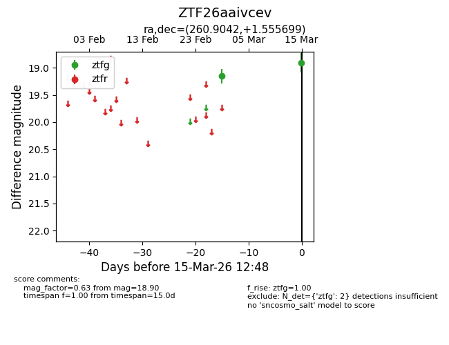
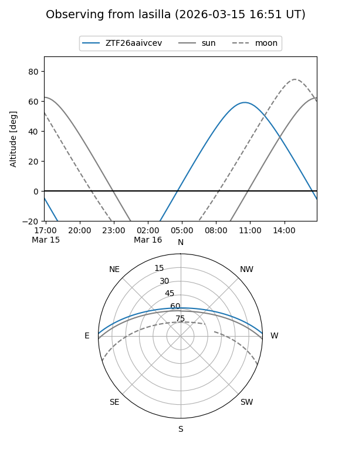
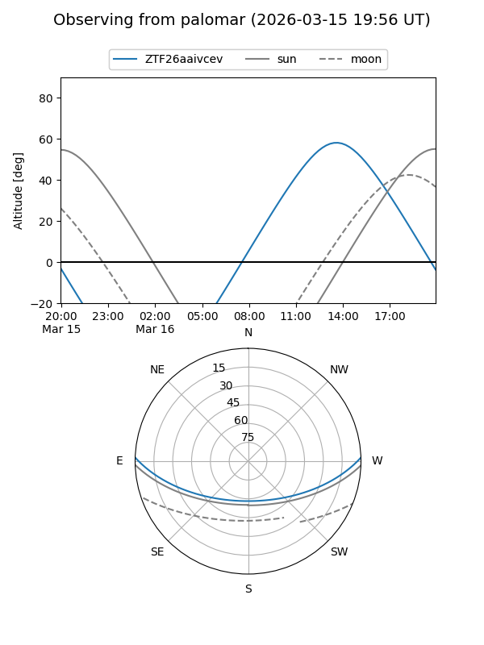

ZTF26aaivcev
Target ZTF26aaivcev at 2026-03-15 12:50
Aliases and brokers:
FINK: link
Lasair: link
ALeRCE: link
alt names
ZTF26aaivcev (ztf,fink_ztf)
Coordinates:
equatorial (ra, dec) = 260.9042,+1.55570
equatorial (HMS+DMS) = 17:23:37.02,+01:33:20.52
galactic (l, b) = (23.9672,+20.18224)
Flags:
Photometry:
last ztfg=18.90
2 ztfg detections
Lightcurve

Visibility


Additional plots